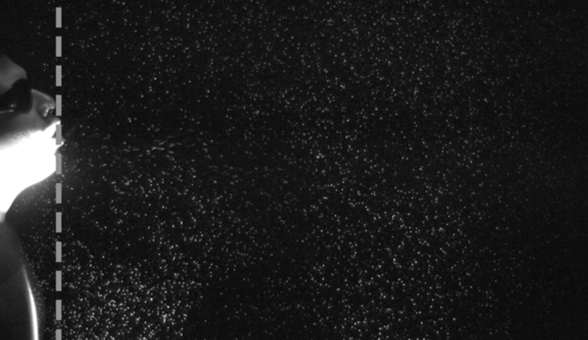
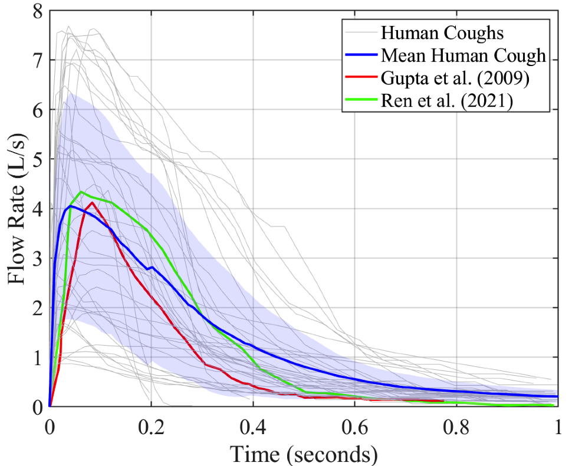
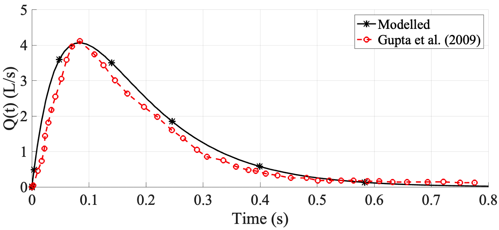
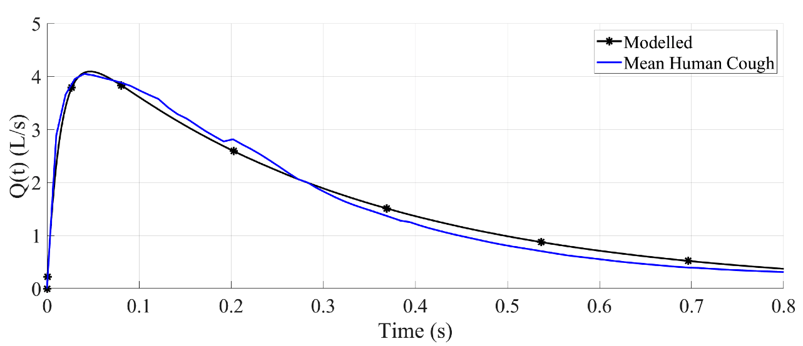
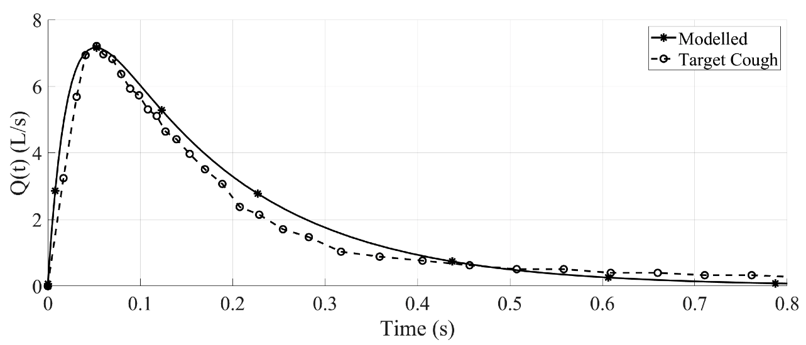
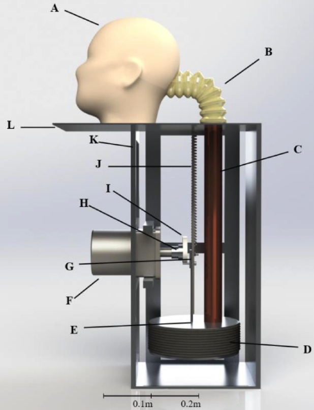

Hi, I'm Walt Wang
I'm a passionate researcher and engineer specialising in bioengineering.
Learn More
I'm a passionate researcher and engineer specialising in bioengineering.
Learn More
I'm a researcher and engineer with strong mechanical design and programming experience. I have experience in both academic research and practical projects. I'm passionate and confident in developing innovative solutions that bridge engineering and real-world applications.
Here are some of the projects I have worked on. A major project: design a cough simulator is spited into three small projects: human coughs measurement, cough modelling, and cough simulators. A key idea is presented as accomplishing smaller objectives and integrating the results to achieve the overall goal.
In 2024, I tested the coughs of 12 volunteers (11 male, 1 female) for flow rate and particulate matter measurement. The figure below shows a human cough captured using Particle Image Velocimetry (PIV), with a high-speed camera recording 1500 frames in 1.5 seconds. The measured flow rate as a function of time of 36 coughs (grey) and the average cough (blue) are also shown. Look at grey lines, human coughs are so different from each other!
 To better understand human coughs and assist in designing the cough simulator, I developed a mathematical model on MATLAB to replicate actual human cough measurements and determine the correct input for the simulator. The figure shows that the model achieves high accuracy after being tuned to match a cough from the well-known study by Gupta et al. (2009). Moreover, the model can be tuned to match other measured human coughs. The blue one is the mean human cough we just got, and the black one is an example target human cough.
  From 2024 to 2025, I introduced a tunable cough simulator, the first of its kind capable of replicating coughs with precise flow rates and particulate matter size distribution for various human subjects. This work, presented by me at the Australasian Fluid Mechanics Conference (AFMC) 2024, had a significant impact on the public. The simulator is powered by a motor with adjustable disks and springs. The disk size alters the bellows extension distance, simulating lung behavior, while different springs adjust the cough strength, representing muscle force.
I have received several fascinating awards, particularly during my undergraduate studies in Taiwan. When I was in the final year, I designed a smart city mapping system using MEMS sensors to detect human activities and algorithms to monitor city activity. This project led to a presentation in Taipei in front of entrepreneurs and government officials. I was the winner of the Keelung Hackathon, competing against 50 teams, and was honored by Lin Yu-chang (林右昌 Youchang LIN), the Mayor of Keelung. Here are my award certificates, and I'm glad to share this joy with you. (Note that the project details cannot be disclosed due to a signed contract with the government.)
If you would like to get in touch, feel free to reach out and have a chat.